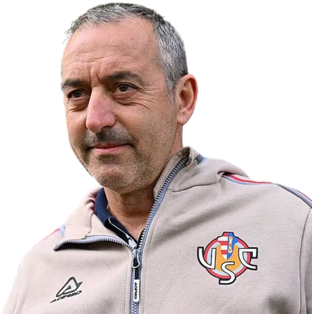

Treinador: Marco Giampaolo
Marco Giampaolo, conhecido como o "Maestro", regressou ao comando da US Cremonese em março de 2026. O conceituado técnico italiano lidera agora o projeto do clube na Serie A, aplicando o seu rigoroso e debatido estilo tático numa segunda passagem por Cremona.

Estádio: Giovanni Zini
O estádio Giovanni Zini é a carismática alma da US Cremonese e um símbolo de orgulho para a cidade. Nomeado em homenagem a um guarda-redes herói de guerra, o recinto representa a história e a resiliência do clube na Lombardia.

Estilo de Jogo:
O estilo de jogo de Marco Giampaolo na US Cremonese é pautado pelo rigor tático e pela organização geométrica, seguindo a filosofia de que o sucesso vem através do controlo absoluto dos espaços.
"Amicizia e Vigore!"